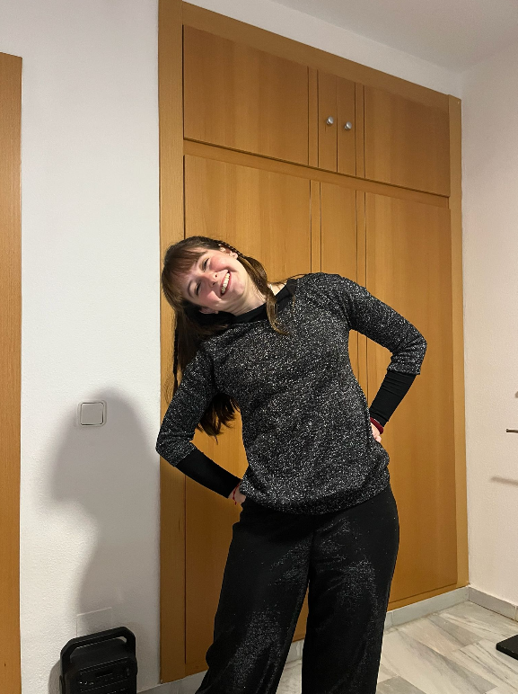
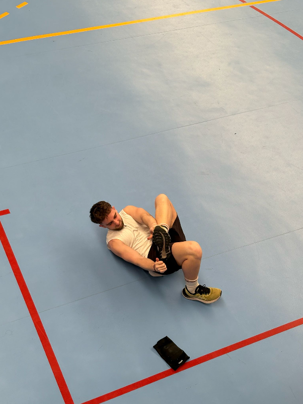
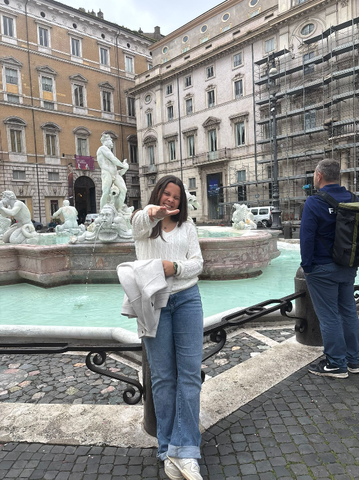

Un recorrido educativo a través de 14 semanas y 28 sesiones. Explorando nuevas formas de enseñar y aprender mediante la reflexión continua y el trabajo en equipo.
Desarrollo de las clases teóricas y prácticas. Haz clic para leer más.
Sigue nuestro viaje de aprendizaje clase a clase.
Desglose de nuestra propuesta educativa basada en el Proceso Lógico de Pensamiento.
Este apartado se desbloqueará e irá recopilando la aplicación práctica, las respuestas elaboradas a nuestras preguntas de investigación y las evidencias del trabajo en el aula.
Desglose de los 7 documentos de trabajo elaborados durante el curso.
Los futuros docentes detrás de este proyecto.

Luque Ángel

Pacheco Bravo
Molina Redondo

Orens Gómez
Nuestra reflexión grupal y vuestra valoración sobre el proyecto.
Como futuros docentes, creemos que la reflexión sobre nuestra propia práctica es fundamental. Durante estas 14 semanas hemos aprendido a trabajar en equipo, a delegar y a confiar en las capacidades de los demás.
Nuestras fortalezas: La creatividad en el diseño de esta web, la constancia en el diario de sesiones y nuestra capacidad de adaptar la teoría a formatos visuales y reales.
Nuestros retos: Mejorar la capacidad de síntesis ante el gran volumen de información y aprender a controlar mejor los tiempos en nuestras exposiciones orales.
Ayúdanos a mejorar. Desliza la barra para valorar del 1 (Insuficiente) al 5 (Excelente) y déjanos un comentario constructivo.
"Este portfolio no es solo una recopilación de apuntes, sino el reflejo de nuestro proceso educativo. A lo largo de estas 14 semanas hemos aprendido que la Didáctica es el arte de conectar el conocimiento con las personas."